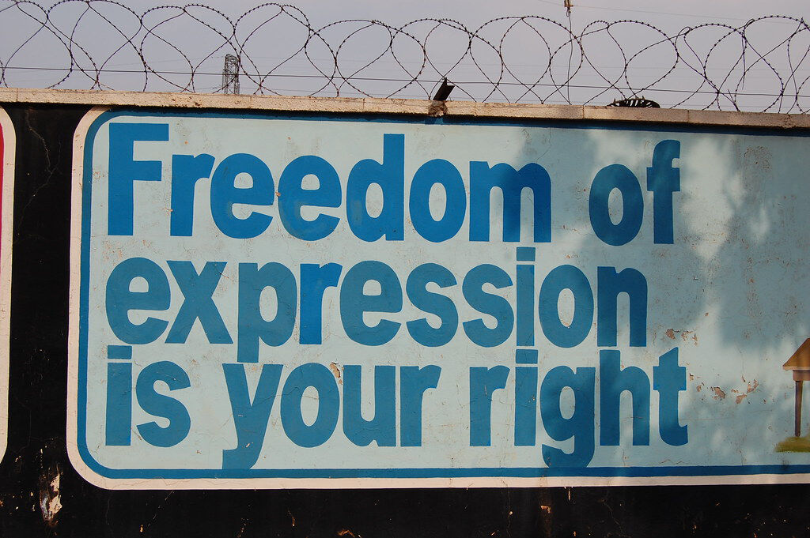
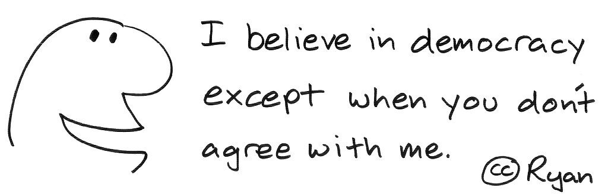
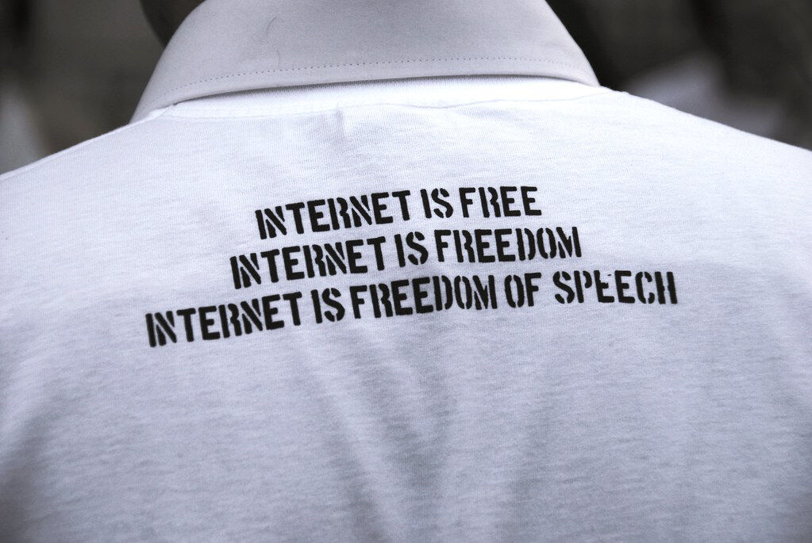

Öğrenen Sürümü
Eğitici Sürümü
Öğrenen Sürümü
Eğitici Sürümü
Modül 10: İfade Özgürlüğü
Modülün Tanımı
Bu Modülün temel amacı, ifade özgürlüğü ve diğer ilgili haklar ile bunların işlevlerini açıklamaktır.
İkincil amaç, bu Modülün içeriğini başkalarını eğitmek için kullanmak isteyen eğitmenlere rehberlik etmektir.
Bu amaçlarla Modülde, bilgi edinme özgürlüğü ve bu konunun nasıl öğretileceğine ilişkin yönergeler sunulmaktadır.
Bu Modülü başarıyla tamamlayanlar şunları yapabilirler:
- ifade özgürlüğünün tanımını ve işlevini anlar
- farklı özgürlük türlerini ve bunların yasal dayanaklarını tanır
- temel özgürlüklerin eksikliğinin sonuçlarını anlar
- Değişen medya ortamının ifade özgürlüğü üzerindeki etkilerini anlar
Ek olarak, bu Modülü başarıyla tamamlayan eğitmenler, ifade özgürlüğünün nasıl öğretileceğine dair bir anlayış sergileyebileceklerdir.
Modülün Yapısı
Bu Modül aşağıdaki bölümlerden oluşur:
- Amaç, İçeriğin Tanımı ve Öğrenme Çıktıları
- Modülün Yapısı
- Öğrenenler için Yönerge
- Eğitmenler için Yönerge (hazırlık, kullanılacak yöntemler ve eğitmenler için ipuçları)
- İçerik (çalışma materyalleri)
- Test
- Kaynaklar (yararlanılan ve önerilen kaynaklar ile videolar)
Modülün ana hedefleri, içerik ve öğrenme çıktıları Modül Tanımı bölümünde açıklanmıştır. Öğrenenler için Yönerge, katılımcılar için yönlendirme ve önerileri içerir. Eğitmenler için Yönerge, eğitimin farklı aşamalarında eğitmenlere rehberlik eder ve konuyu öğretirken faydalı olabilecek ipuçları sağlar. İçerik, tüm çalışma materyallerini ve ilgili alıştırmaları içerir. Test, katılımcıların ilerlemelerini test edebilmeleri için hazırlanmış doğru/yanlış sorularından oluşur. Kaynakça, yararlanılan kaynaklar ve önerilen kaynaklar şeklinde iki bileşenden oluşur. Kaynakça, içerik hazırlanırken yararlanılan ve atıf yapılan kaynakların listesidir. Önerilen kaynaklar, konuyla ilgili daha fazla bilgi edinmek için okunması ve izlenmesi önerilen ek kaynaklar ve videoların bir listesinden oluşur.
Öğrenenler için Yönerge
Öğrenenlerin içeriği dikkatle okumaları ve önerilen videoları izlemeleri beklenir. Daha fazla bilgi edinmek isterlerse Modül sonunda önerilen kaynaklara başvurabilirler. İçeriğe yönelik çalışmalarını tamamladıktan sonra öğrenenlerin, ilerlemelerini değerlendirmek için Modül sonundaki testi yapmaları tavsiye edilir. Test sonuçlarına göre, gerekirse çalışma materyali yeniden gözden geçirilebilir.
Eğitmenler için Yönerge
Bu bölüm, insanları bu konuda eğitmek için Modül içeriğinin nasıl kullanılacağına ilişkin eğiticilere yönelik öneriler ve ipuçları içerir.
Hazırlık
Eğitim başlamadan önce, görseller ve olgusal bilgiler (kanıtlar) ile zenginleştirilmiş bir sunum (PowerPoint/Prezi/Canva) hazırlanması tavsiye edilir. Ayrıca, bu Modüldeki örneklerin ve alıştırmaların, hedef grubun daha aşina olduğu konulara uyarlanması önerilir. Güncel veya iyi bilinen konularla ilgili yerel (ülkeye özgü) örneklerin seçilmesi, konunun daha iyi anlaşılmasına ve katılımcıların dikkatini konuya çekmeye yardımcı olur. Örnekler ne kadar tanıdık ve popüler olursa, mesaj o kadar iyi iletilecektir.
Başlarken
Başlangıçta, konuya dahil etmek amacıyla katılımcılara Kahoot veya Mentimeter ile kısa sorular (3 ila 5 soru) yöneltilebilir. Bu sorular, katılımcıların konuyla ilgili mevcut bilgilerini anlayabilmek ya da onları motive etmek amacıyla da kullanılabilir. Sorulara bazı örnekler şunlar olabilir: İfade özgürlüğü nedir? Bilgi edinme özgürlüğü nedir? Bu haklar neden önemlidir?
Kullanılacak Yöntemler
Eğitim sırasında çeşitli öğretim yöntemleri bir arada kullanılabilir:
- Ders anlatma
- Tartışma
- Grup çalışması
- Kendini yansıtma
Eğitmenler için İpuçları
Isınma
Katılımcıları sürece dahil etmenin ve öğrenecekleri şeyler hakkında ortak beklentiler oluşturmanın etkili bir yolu, konuyla ilgili birkaç ön soru sormaktır. Örneğin, bir fikir seçip üzerine tartışmalarını isteyerek katılımcılarla grup çalışması yapılabilir. Ayrıca, her katılımcıdan yapışkan notlara fikirlerini yazmalarını isteyerek bireysel olarak konuya dahil olmaları sağlanabilir. Etkinlik şu şekilde gerçekleştirilebilir:
- Katılımcılara sosyal medyadaki olası kısıtlamalar hakkında ne düşündüklerini sorun.
- Katılımcıları düşünce veya ifade özgürlüğü gibi farklı özgürlük kavramlarını tanımlamaya davet edin ve bunların işlevleri hakkındaki fikirlerini sorun.
Dersin Amacının Belirtilmesi
Dersin, “ifade özgürlüğü ve diğer ilgili hakları ve işlevlerini açıklamaktır” şeklinde tanımlanmış olan amacı net bir şekilde sunulmalıdır. Isınma sorularının ardından amaç ve hedefleri netleştirmek daha kolay olacaktır.
Ders İçeriğinin Sunulması
İçeriği sunarken katılımcılarla etkileşime girdiğinizden emin olun ve onları aktif katılım için teşvik edin.
- İfade özgürlüğünün tarihçesini sunmadan önce, katılımcılardan kendilerini birer vatandaş olarak düşünmelerini isteyin ve onları, örneğin, siyasi meseleler hakkında kendi ülkelerinde veya toplumlarında konuşmakta özgür olup olmadıklarını tartışmaya teşvik edin.
- Demokratik bir toplumda özgürlüklerin işlevlerini tanıtırken internette herhangi bir kısıtlamaya ihtiyaç olup olmadığını sorun.
Bitirirken
Dersin kısa bir özetini yapın ve vermeyi planladığınız en önemli mesajların altını çizen birkaç soru sorun. Örneğin şu soru yardımcı olabilir:
- Katılımcılara, devlet tarafından sosyal medya hesaplarına herhangi bir kısıtlama uygulandığında nasıl tepki vereceklerini sorun.
Bitirirken, katılımcıların, özgürlüklerin temel insan hakkı olduğunu, ancak diğer insanlara zarar vermemek için bazı sınırları olması gerektiğini anladığından emin olun.
İçerik: İfade Özgürlüğü
Giriş
Kendi içinde önemli bir temel hak olan ifade özgürlüğü, düşünce ve haber alma özgürlüğü gibi diğer özgürlüklerin ve hakların savunulması ve desteklenmesi açısından da kritik öneme sahiptir. İnsanlar bu hakkı günlük hayatta fikir, görüş ve bilgi alışverişinde bulunarak kullanırlar. Bu nedenle ifade özgürlüğünü gerçekleştirmek isteyenlerin iletişim araçlarını ve yapılarını anlamaları ve bu alışverişi kolaylaştıran ortamları düzenlemeleri çok önemlidir (Panday, t.y.).
Demokrasi teorisyenlerinden Montesquieu, düşünce özgürlüğünü en önemli özgürlük olarak nitelendirmiş, yaratıcılık ve erdemlilik gibi insanı insan yapan niteliklerin ancak özgür bir ortamda geçerli olabileceğini ve gelişeceğini savunmuştur. Fikirlerin özgürce ifade edilebildiği ortamlarda demokratik kurumların varlığından söz etmek mümkün olabilmekte, ve bu kurumlar ancak demokratik ortamlarda sağlıklı şekilde gelişebilmektedirler. Özgür insanlar ise, özgürce düşünebilen ve düşüncelerini özgürce ifade edebilen bireyler olarak tanımlanabilmektedir (Çelik ve Tonta, 1996, s.1).
İfade özgürlüğü, modern toplumlarda temel bir haktır ve iyi işleyen anayasal demokrasiler için özel bir öneme sahiptir. Bu özgürlük, açık toplumları kapalı olanlardan, liberalleri de otoriter olanlardan ayırır. Bununla birlikte, ifade özgürlüğü kavramı, bir kişinin görüşünü ifade etme özgürlüğünden çok daha fazlasını içerir. Düşünce, haber alma ve konuşma özgürlüklerinin “ifade” terimi altında incelenebileceği genel olarak kabul edilmektedir (Hugelier, 2011, s. 61-62; Legal Information Institute, t.y.).
Tarihte ifade, konuşma ve haber alma özgürlüğü gibi temel insan haklarından ilk kez söz edilen kaynaklar arasında aşağıdakilerin öne çıktığı görülmektedir:
- İsveç Mevzuatı Basın Özgürlüğü Yasası (1766): İsveç Parlamentosu, basın özgürlüğünü ve bilgi edinme özgürlüğünü destekleyen dünyanın ilk yasası olarak kabul edilen bir yasa çıkarmıştır. İlgili yasa, bir devletin vatandaşlarının misilleme korkusu olmadan bilgiyi ifade edebilmesi ve yayabilmesi ilkesini benimsemiştir. Bu kod o zamandan beri dünya çapında demokrasilerin kilometre taşı haline olarak kabul edilmektedir (Cunningham, t.y.; Government Offices of Sweden, 2015).
- Amerika Birleşik Devletleri Anayasası Birinci Değişiklik Maddesi (1791): “Kongre, ifade veya basın özgürlüğünü kısıtlayan hiçbir yasa yapmayacaktır ” (Cunningham, t.y.).
- John Stuart Mill'in “On Liberty” adlı eseri (1859): Kitapta, ifade özgürlüğünün önemi vurgulanmaktadır (Sorabji, 2021, s. 62-63).
- Amerika Birleşik Devletleri Anayasası On Dördüncü Değişiklik Maddesi (1868): “Birleşik Devletlerdeki tüm bireyler, ifade özgürlüğü de dahil olmak üzere ilk sekiz değişikliğin 'ayrıcalıkları ve dokunulmazlıkları' konusunda eşit bireysel haklara sahiptir ” (Sorabji, 2021, s. 62-63).

"freedom of expression is your right", rhinman Lisans: CC BY 2.0
Bugün ifade özgürlüğü, 1948 yılında Birleşmiş Milletler tarafından İnsan Hakları Evrensel Beyannamesi'nde (İHEB) tanınan temel bir insan hakkıdır. Söz konusu beyanname, dünyanın her yerinden farklı hukuki ve kültürel geçmişe sahip Birleşmiş Milletler Genel Kurulu'nun farklı ülkelerinin temsilcileri tarafından onaylanmıştır. Bildirge, evrensel olarak korunması gereken temel insan haklarını ilk kez belirlemiş ve 500'den fazla dile çevrilmiştir (United Nations, t.y.).
İHEB'in 19. Maddesinde bu haktan şu şekilde bahsedilmektedir (United Nations, 1948):
“Herkesin düşünce ve ifade özgürlüğü hakkı vardır; bu hak, herhangi bir müdahale olmaksızın fikir sahibi olma ve ülke sınırları ne olursa olsun, bilgi ve fikirleri herhangi bir araçla arama, alma ve yayma özgürlüğünü içerir.”
Buna göre, Birleşmiş Milletler Genel Kurulu tarafından kabul edilen Uluslararası Medeni ve Siyasi Haklar Sözleşmesi, 1976'da yürürlüğe girmiş ve burada ifade özgürlüğü eylemi (Madde 19) aşağıdaki şekilde güncellenmiştir (BM Genel Kurulu, 1966):
- Herkes, müdahale olmaksızın görüş sahibi olma hakkına sahiptir.
- Herkesin ifade özgürlüğü hakkı vardır; bu hak, ülke sınırları ne olursa olsun, sözlü, yazılı veya basılı olarak, sanat biçiminde veya kendi seçeceği herhangi bir başka araçla her türlü haber ve fikri arama, alma ve verme özgürlüğünü içerir.
- Bu maddenin 2. paragrafında belirtilen hakların kullanılması, özel görev ve sorumlulukları beraberinde getirir. Bu nedenle belirli kısıtlamalara tabi olabilir, ancak bu kısıtlamalar yalnızca yasaların öngördüğü ve aşağıda belirtilen gerekli hallerde söz konusu olur:
- Başkalarının haklarına veya itibarlarına saygı gösterilmesi;
- Ulusal güvenliğin veya kamu düzeninin (ordre public) veya kamu sağlığı veya ahlakının korunması.
1952 tarihli Avrupa İnsan Hakları Sözleşmesi'nin 10. maddesinde de ifade özgürlüğü bir insan hakkı olarak kabul edilmiştir. İlgili maddede şu ifade yer almaktadır (Council of Europe, 1952):
“Herkes ifade özgürlüğü hakkına sahiptir. Bu hak, kamu makamlarının müdahalesi olmaksızın ve ülke sınırları gözetilmeksizin, kanaat özgürlüğünü ve haber ve görüş alma ve verme özgürlüğünü de kapsar. Bu madde, Devletlerin radyo, televizyon veya sinema işletmelerini bir izin rejimine tabi tutmalarına engel değildir.”
Bu maddelerde belirtilen “özgürlük”, yalnızca bir kişinin fikrini açıklama hakkını (diğer bir deyişle “ifade özgürlüğü”nü) değil, aynı zamanda haber ve fikirleri alma ve iletme hakkını da içerir. Öte yandan, bu maddeler haberden çok fikirlere vurgu yapmaktadır (Hugelier, 2011, s. 64).
"İfade özgürlüğü" kapsamında yer alan özgürlüğün sınırlarının ne olması gerektiği konusunda (özellikle farklı siyasi ve felsefi bakış açıları söz konusu olduğunda) bazı tartışmalar vardır. Bazı görüşlere göre, herhangi bir ifade fiziksel bir eyleme dönüşmediği sürece özgür olmalıdır. Bazılarına göre ise, psikolojik baskı unsuru olabilecek ifadeler (nefret söylemi, pornografi gibi) özgürlük kavramının sınırları dışında düşünülmelidir (van Mill, 2021). Avrupa İnsan Hakları Sözleşmesi'nin 10. Maddesinde bu kısıtlamalar şu şekilde geçmektedir (Council of Europe, 1952):
“Görev ve sorumluluklar da yükleyen bu özgürlüklerin kullanılması, yasayla öngörülen ve demokratik bir toplumda ulusal güvenliğin, toprak bütünlüğünün veya kamu güvenliğinin korunması, kamu düzeninin sağlanması ve suç işlenmesinin önlenmesi, sağlığın veya ahlakın, başkalarının şöhret ve haklarının korunması, gizli bilgilerin yayılmasının önlenmesi veya yargı erkinin yetki ve tarafsızlığının güvence altına alınması için gerekli olan bazı formaliteler, koşullar, sınırlamalar veya yaptırımlara tabi tutulabilir."
Yeni Medya Ekosistemi ve Bilgi Edinme Özgürlüğü
Başkalarının fikirlerini duymak, onların doğru olup olmadığını öğrenmeye, yanlış ise gerçeği daha açık bir şekilde ortaya çıkarmaya yardımcı olabilir. Yani farklı düşüncelerle beslenen birey kendi düşünce yapısını daha iyi geliştirir (Sorabji, 2021, s. 64-65). Medyanın temel görevi, görüş ve düşüncelerin ifade edilmesine zemin oluşturmak, kamu yararına olduğu sürece bilgi vermek ve almak olduğundan, “kamusal bekçi” şeklinde tanımlanabilecek önemli bir role sahiptir. Haber alma özgürlüğü kadar ifade özgürlüğünün de özgür bir basının varlığı için hayati önemi vardır. Dolayısıyla, ifade özgürlüğü ile bilgi edinme özgürlüğü arasında tartışılmaz bir bağ bulunmaktadır (Hugelier, 2011, s.63).
Bilgi edinme özgürlüğü olarak adlandırılan doğru ve değiştirilmemiş bilgiye erişim hakkının bulunduğu ülkelerde özgürce düşünebilen ve düşüncelerini özgürce ifade eden bireyler özgürdür. Bu hakkın tam olarak bulunmadığı ülkelerde ise, demokratik olmayan yönetimlerce medya araçları kullanarak gerçek dışı bilgi ve haberlerin halka empoze edildiği, bu nedenle de sağlıklı bir kamuoyunun oluşmadığı görülmektedir. Tüm bunlardan dolayı demokratik ülkelerde düşünce özgürlüğü kavramının temel dayanağı, vatandaşların bilgiye erişim hakkıdır (Çelik ve Tonta, 1996, s.1).
“Bilgi aramak, demokratik bir toplumda kolektif karar alma için gerekli olan gerçeği bulmak için esastır.” (Hugelier, 2011, s. 64)
Çağdaş toplumlar, bilgi edinme özgürlüklerini yaygın olarak medya aracılığıyla kullanmaktadır. Bu nedenle basın özgürlüğünün desteklenmesi ve "İnsan Hakları Evrensel Beyannamesi", “Avrupa İnsan Hakları Sözleşmesi” ve “Helsinki Nihai Senedi”nde de bir hak olarak kabul edilen, her türlü haberin kitle iletişim araçları aracılığıyla ülke sınırları gözetilmeksizin öğrenilip yayılabilmesi kamu yararınadır (Çelik & Tonta, 1996, s.1). İnsanlığın bu haklardan eşit şekilde yararlanmasını önemseyen uluslararası Sınır Tanımayan Gazeteciler örgütü (RSF), bu amaçla dünyadaki gazetecilerin durumunu izlemekte ve ülkeleri medya özgürlüğü derecelerine göre her yıl sıralamaktadır (Reporters Without Borders, 2021).

Tüm farklı sesler ve görüşler, yalnızca konuşma ve ifade özgürlüğünü sağlamak için değil, aynı zamanda insanlara çeşitli bilgilere erişim sağlamak adına da adil bir şekilde duyulmayı hak etmektedir (Pickard, 2020). Dijital çağda iletişim, kişisel e-postalardan veya statik web gezinmesinden, hızla geniş kitlelere ulaşan ve son derece geniş bir kapsamı olan daha etkileşimli, paylaşıma yönelik küresel bir fenomene dönüşmüştür. Özellikle sosyal medyanın yarattığı bu köklü değişim, internetin de evrimleşmesine yol açmıştır. Dijital teknolojilerin yaygınlaşması sadece sınırsız bilgiye erişimi teşvik etmekle kalmamış, aynı zamanda çeşitli medya türleri aracılığıyla erişilebilen ve farklı teknolojiler kullanan çeşitli ses, görüntü, metin ve kodlardan oluşan bir ekosistem yaratmıştır (Panday, t.y.).
Bu evrimin bir sonucu olarak, erişilebilen bilgi miktarı artmış, bilgiye erişimin önündeki bazı olası engeller (zaman ve mekân kısıtlamaları gibi) ortadan kalkmış ve bu da iletişimi daha demokratik hale getirmiştir. Bu sayede internet kullanıcıları geleneksel medya ekosistemindeki eşik bekçilerini aşarak internet üzerinde yazar veya yayıncı rolünü üstlenebilmiş ve böylece her türlü içeriğin üretilmesi, paylaşılması ve değiş tokuş edilmesi için sınırsız olanaklar ortaya çıkmıştır. Bu bakış açısıyla internet, konuşma ve ifade özgürlüğü üzerindeki geleneksel kısıtlamalardan arınmış, küresel olarak erişilebilir bir iletişim aracı olarak ortaya çıkmıştır. Ancak internet giderek daha fazla tartışma konusu olmaya başlamıştır. Bu tartışmaların temelini, çevrimiçi içeriklerin sayısı arttıkça bunların güvenilirliğinin sorgulanır hale gelmiş olması ve algoritmaların etkisiyle insanların benzer seslere hapsolmaya başlaması oluşturmaktadır. Sonuç olarak, serbest bilgi akışına ve ifade özgürlüğüne meydan okuyan tartışmalar günümüzde yoğunlaşmıştır. Başka bir deyişle bugün bu durumun, internette paylaşılan içeriğe yasal düzenlemeler getirilmesi de dahil olmak üzere, farklı biçimlerde güç kullanımı ve kontrol uygulamalarının tartışmaya açıldığı bazı istenmeyen sonuçları da bulunmaktadır (Panday, t.y.).
İnternet ve Özgürlükler
İnternetin ortaya çıkışı, fikirlerin ifade edilmesi üzerinde çığır açan bir etki yaratmış ve aşağıda özetlenen bazı temel değişikliklere yol açmıştır (Zeno-Zencovich, 2008, s. 100-112):
- Bireysel bir özgürlük olarak ifade özgürlüğü: Geleneksel medya baskın özelliğini sürdürmeye devam ederken, bireylerin fikirlerini bağımsız olarak yayma fırsatı bulduğu yeni bir model ortaya çıktı.
- Medyanın aracılık rolünün kaybolması: İnternet ortamında dikkatlerin, fikirlerin ifade edilmesine kayması, kitle iletişim araçlarının geleneksel rolünü önemli ölçüde değiştirmiştir. Geleneksel medya kuruluşları sadece fikirlerin yayılması üzerindeki tekellerini kaybetmekle kalmamış, her şeyden önce ayrıcalıklı birer bilgi kaynağı olma özelliklerini de büyük ölçüde yitirmişlerdir.
- Veriye karşı bilgi: Odak, ifade özgürlüğünden veriyi iletme ve yayma özgürlüğüne, diğer bir deyişle bilgilendirme özgürlüğüne kaymıştır.
- Değişen iletişim alışkanlıkları: İnternet, geleneksel medya kuruluşlarından farklı bir mantığa sahip olup, kullanıcılarına yeni veya farklı bir deneyim yaratmaktadır. Bu aynı zamanda fikirlerin ifade edilme şeklini de etkilemektedir.
- İnternette ticari faaliyet: İnternetin yaygınlaşmasıyla birçok endüstrinin süreçleri ve yöntemleri değişmiş ve bunların yenileri ortaya çıkmıştır. Bunların amacının da, bir toplumda bilginin sorumlu bir şekilde toplanmasını, işlenmesini ve yayılmasını sağlamak olması gerekmektedir.
- Ulusötesilik: İnternet tabanlı iletişim ve web siteleri, doğaları gereği, tüm dünyada mevcuttur ve erişilebilirdir. İçerikleri, ülkesel hukuk sistemlerinin kurallarıyla kısıtlanamaz.

"internet is freedom of speech", BEE FREE - PGrandicelli [the social bee] Lisans: CC BY-NC-SA 2.0
İnternet, insanlığın daha önce karşılaşmadığı bir özgürlük ve demokrasi zemini hazırlamış olsa da burada özgürlüklerin sınırları da tartışma konusudur. İnsanların aracı olmadan yayıncı, yazar, bilgi üreticisi ve yayıcı olduğu bu ortamda zararlı, yanlış veya kasıtlı olarak manipüle edici veya taraflı bilgiler de yayılabilmektedir. Örneğin, seçmenleri hedeflemek için ifade özgürlüğüne dayalı kişisel profiller kullanılıyorsa, bu büyük bir sorun olabilmektedir. İnternetin özellikle sosyal medya aracılığıyla yaydığı sorunlu bilgilerin bir kısmını şu şekilde sıralamak mümkündür (Sorabji, 2021, s. 112-133):
- Kişilerin kişisel verileri üzerinden uygunsuz menfaat elde eden şirketler: Kişilerin sosyal medyadaki ayak izlerinden elde edilen kişisel profillerin reklam ve siyasi propaganda ile bireyleri hedef almak için kullanılması (bu verilerin üçüncü şahıs şirketlerle paylaşılması da buna dahildir).
- İnsanların fikir ve kararlarını manipüle etmek veya onlara zarar vermek için dezenformasyon veya yanlış bilgi yaymak.
- Demokratik oylamayı tehlikeye atmak: Kontrolsüz veri komisyonculuğu şirketlerinin, belirli bir siyasi parti veya görüşe yönelik propaganda yapmak için internette paylaşılan kişisel verilerden kişilik profilleri çıkarması.
- Yankı odaları: Farklı profiller çıkararak farklı içerikleri belirli kitlelere hedeflemenin olumsuz sonuçlarından biri. Yankı odalarında, özellikle içeriğin politik olduğu durumlarda insanların gerçeği öğrenmek yerine kendi fikirlerini duymaları.
- Aşırılık yanlısı politikacılara veya sansasyonel web sitelerine reklam alanları satmak: Sosyal medya şirketlerinin, sattıkları reklam alanı için daha yaygın olarak okunan sansasyonel veya aşırılık yanlısı içeriği tercih etmeleri. Bu içerikler okundukça sosyal medya şirketleri daha çok kazanmaktadır.
- Sosyal medya içerikleri aşırı uç noktalara ulaştığında içeriği kaldırmada yaşanan zorluklar: Genellikle sorunla başa çıkacak yeterli sayıda insan editör bulunmaz. Bu tür içerikleri düzenlemek genellikle ahlaki anlayış gerektirir.
- Kamusal yaşam ile zihinsel ve fiziksel sağlık üzerindeki etkiler: Özellikle genç nesillerin, sosyal medyadaki profillerinin akranları ile eşleşip eşleşmediği veya akranlarının mesajlarına cevap verme zahmetine girip girmeyecekleri konusunda yaşadığı endişeler. Kendine zarar vermeyi veya intiharı teşvik eden bir gönderiye maruz kalındığında daha ciddi sağlık tehlikeleri de ortaya çıkabilmektedir.
Daha önceki başlıklarda da bahsedildiği gibi ifade veya konuşma özgürlüğünün özü gerçeği ortaya çıkarmak ve başkalarının deneyimlerinden yeni şeyler öğrenmektir. Ancak veri satmanın veya bu verilerden kişisel profil oluşturmanın gerçeklerden daha değerli olduğu bir sosyal medya ortamında bu temel insan hakları pek uygulanabilir değil (Sorabji, 2021, s. 133).
Öte yandan, bazı kişisel verilerin toplanması her zaman yasa dışı değildir. Örneğin, büyük bir çevrimiçi e-ticaret şirketi, kişinin kişisel verilerine ve tercihlerine bakarak yeni ürünler sunabilmektedir. Burada kırmızı çizgi, verileri başka şirketlere satmak veya daha önceki başlıklarda da bahsedildiği gibi bu verileri insanlara zarar vermek için kullanmak olabilir (Sorabji, 2021, s. 122).
İnternette bilgi paylaşmak veya kişisel profiller oluşturmak her zaman zararlı bir eylem olmayabilir. Burada önemli olan, tıpkı günlük hayatta toplum içinde yaşarken olduğu gibi interneti kullanırken de olası manipülasyonların farkında olmak ve sorumlu davranmak, sınırsız özgürlüğe sahip olmadığımızı bilmektir (Sorabji, 2021, s. 172). Medya ya da haber okuryazarlığı gibi eğitim programları, kamuoyunda bu tür bir farkındalık yaratmanın somut çözümlerinden bazılarıdır.
Test
Kaynakça
Council of Europe. (1952). The European Convention on Human Rights. Strasbourg: Directorate of Information. Retrieved from https://www.echr.coe.int/documents/convention_eng.pdf.
Cunningham, J. M. (n.d.). A Brief History of Press Freedom. Encyclopedia Britannica. Retrieved from https://www.britannica.com/story/250-years-of-press-freedom.
Çelik, A. & Tonta, Y. (1996). Düşünce özgürlüğü, bilgi edinme özgürlüğü ve bilgi hizmetleri. In Tonta, Y. & Çelik, A. (Eds.). Bilgi Edinme Özgürlüğü (Freedom of Information), (pp. 1-13). Ankara: Türk Kütüphaneciler Derneği, 1996.
Government Offices of Sweden. (2015, May 17). The Constitution of Sweden. Retrieved from https://www.government.se/information-material/2013/08/the-constitution-of-sweden/.
Hugelier, S. (2011). Freedom of expression and transparency: Two sides of one coin. Jura Falconis, 47(1), 61–91.
Legal Information Institute. (n.d.). Freedom of Expression - Speech and Press. Retrieved from https://www.law.cornell.edu/constitution-conan/amendment-1/freedom-of-expression-speech-and-press.
Panday, J. (n.d.). Freedom of Expression in a Digital Age: Effective Research, Policy Formation & the Development of Regulatory Frameworks in South Asia. Retrieved from https://cis-india.org/internet-governance/events/freedom-of-expression-in-digital-age.
Pickard, V. (2020). Democracy Without Journalism? Confronting the Misinformation Society. New York: Oxford University Press.
Reporters Without Borders. (2021). World Press Freedom Index - 2021. Retrieved from https://rsf.org/en/ranking.
Sorabji, R. (2021). Freedom of Speech and Expression: Its History, its Value, its Good Use, and its Misuse. New York: Oxford University Press.
UN General Assembly. (1966, December 16). International Covenant on Civil and Political Rights. Retrieved from https://www.ohchr.org/en/professionalinterest/pages/ccpr.aspx.
United Nations. (1948). Universal Declaration of Human Rights. Retrieved from https://www.un.org/sites/un2.un.org/files/udhr.pdf.
United Nations (n.d.). Universal Declaration of Human Rights. Retrieved from https://www.un.org/en/about-us/universal-declaration-of-human-rights.
van Mill, D. (2021). Freedom of speech. The Stanford Encyclopedia of Philosophy (Spring 2021 Edition), Zalta, E.N. (Ed.). Retrieved from https://plato.stanford.edu/archives/fall2016/entries/freedom-speech/#Aca.
Zeno-Zencovich, V. (2008). Freedom of expression: A critical and comparative analysis. New York: Routledge-Cavendish.
Önerilen Kaynaklar
Cunningham, J. M. (n.d.). A Brief History of Press Freedom. Encyclopedia Britannica. Retrieved from https://www.britannica.com/story/250-years-of-press-freedom.
McDonald, A. (2015, November 5). Freedom of information. Encyclopedia Britannica. https://www.britannica.com/topic/freedom-of-information.
UNESCO. (n.d.). Freedom of Expression: A Fundamental Human Right Underpinning all Civil Liberties. https://en.unesco.org/70years/freedom_of_expression.
Weibull, L. (2020, November 25). Freedom of the Press Act of 1766. Encyclopedia Britannica. https://www.britannica.com/topic/Freedom-of-the-Press-Act-of-1766.
Önerilen Videolar
Langton, R. (2015). What is the Point of Free Speech? https://www.youtube.com/watch?v=7vMiiMLrZuo.
Crash Course. (2015). Freedom of the Press: Crash Course Government and Politics #26. https://www.youtube.com/channel/UCX6b17PVsYBQ0ip5gyeme-Q.